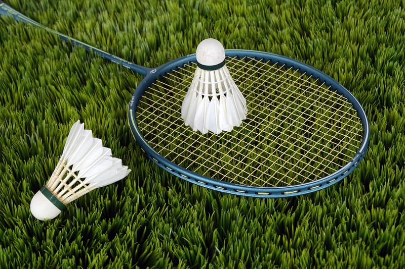

Alright, so let's break down some basic badminton rules . First things first, the court is divided into two halves by a net, and each side is further split into 13 m in length and 5 m in width. The objective is to hit the shuttle over the net and make sure it lands inside your opponent's court boundaries. Each game is played to 21 points, and you must win by at least two points. There are singles matches (one player on each side) or doubles matches (two players on each side). You can only score points when serving, but if you lose a rally while serving, your opponent gets the serve, and most importantly, no touching the net during play!.

in badminton, the two main positions are singles and doubles. In singles, players cover the entire court by themselves, focusing on speed and agility to cover ground quickly. Doubles, on the other hand, requires teamwork between two players, one at the front of the court (the net player) and one at the back (the rear player). The net player is responsible for quick reflexes and smashing shots at the net to dominate play, while the rear player covers most of the court with powerful clears and drives. Communication is key in doubles as players need to coordinate their movements and shots effectively. Understanding these different positions can help players strategize and capitalize on their strengths during a match.
When it comes to playing badminton, Some basic items you'll need include a racket, shuttlecocks, and appropriate footwear. Rackets come in a variety of shapes and sizes, so it's important to find one that feels comfortable in your hand and suits your playing style. Shuttlecocks are typically made of rubber or feather, with feather shuttles being more commonly used in competitive play due to their flight characteristics. As for shoes, it's essential to have a pair with good grip and support to help prevent injuries while moving quickly around the court.